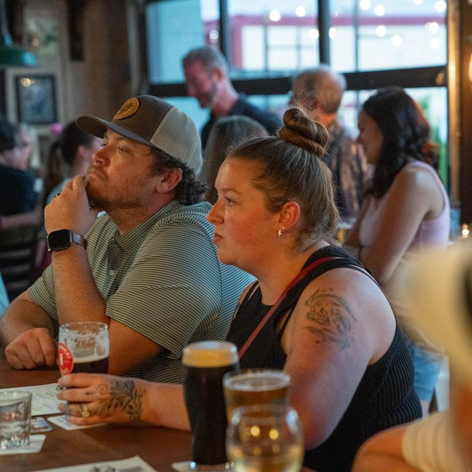

Proper Dublin Pints
Poured with pride through nitro taps: creamy Guinness Irish Stout, Harp Lager, Smithwick’s Red Ale, Magners Irish Cider, and local Carolina craft drafts.
Explore Draft Program →Welcome to Tyber Creek Pub, Charlotte’s storied Irish public house now welcoming friends at 1501 S Mint Street in the Gold District. Relocating with our original mahogany bar intact, we continue twenty-five years of pouring perfect 20oz imperial pints of Guinness, serving beer-battered Icelandic cod & chips, and hosting lively Premier League match day mornings.

Cold imperial pints, authentic Dublin comfort food, and warm community hospitality.
Poured with pride through nitro taps: creamy Guinness Irish Stout, Harp Lager, Smithwick’s Red Ale, Magners Irish Cider, and local Carolina craft drafts.
Explore Draft Program →Savor golden Icelandic cod & chips ($18), the Dublin spice bag ($14), curry chips ($10), double smash burgers ($16), and grilled corned beef reubens on marbled rye.
Discover Pub Kitchen →Open early at 10:00 AM on Saturdays and Sundays for English Premier League, UEFA Champions League, European rugby, Carolina Panthers, and Charlotte FC soccer.
View Match Schedule →Whether gathering with longtime friends, cheering on your football club on a Saturday morning, or enjoying late-night drinks on our patio, Tyber Creek Pub is Charlotte's home away from home.
Hours, Directions & Patio Details →